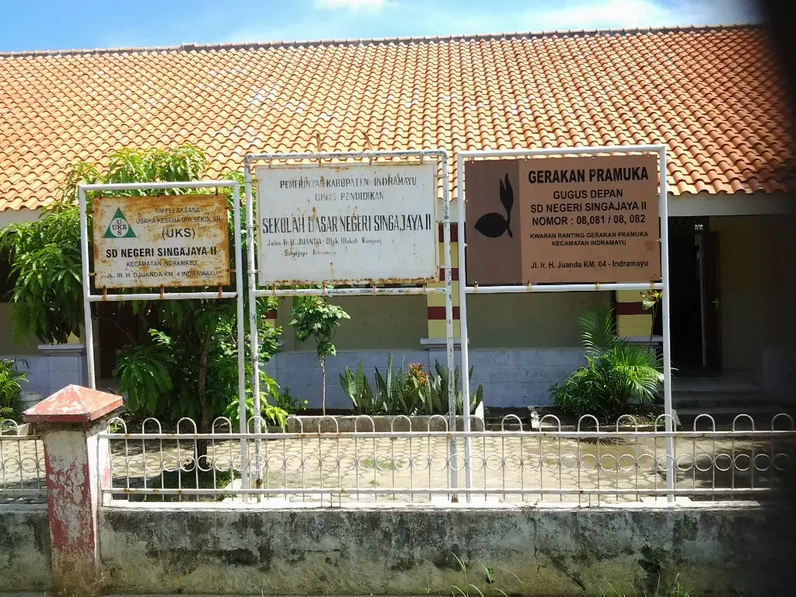
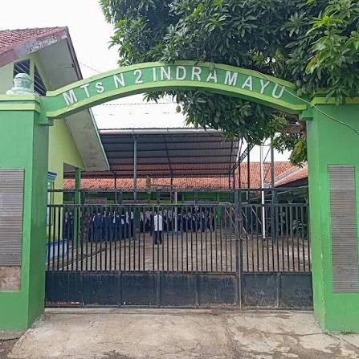
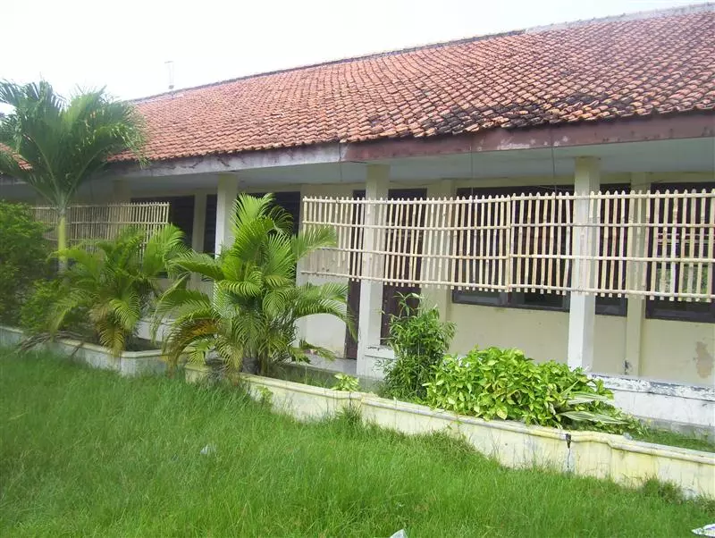
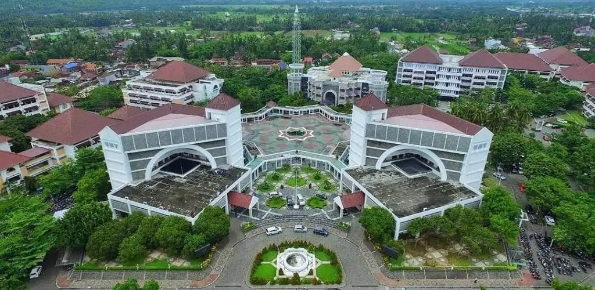

Tentang Diriku
Perkenalan singkat tentang diriku.
Assalamualaikum warahmatullahi wabarakatuh. Saya Haris Zamroni, seorang pendidik, ayah dari lima orang anak, sekaligus pribadi yang percaya bahwa pendidikan merupakan bekal terbaik untuk membangun masa depan.
Berbekal latar belakang di bidang Pendidikan Agama Islam dan Psikologi Pendidikan, saya berupaya menanamkan nilai kejujuran, tanggung jawab, disiplin, dan semangat belajar kepada keluarga maupun masyarakat. Bagi saya, belajar adalah proses sepanjang hayat yang memungkinkan seseorang terus bertumbuh dan memberikan manfaat bagi sesama.
Timeline Pendidikan
Perjalanan pendidikanku.
-

SD
SDN Singajaya 2 Indramayu
-

SMP
MTSN 2 Indramayu
-

SMA
SMA PGRI Indramayu
-
Sarjana (S1)
Pendidikan Agama Islam Tarbiyah - Sekolah Tinggi Agama Islam Shalahuddin Al-Ayyubi
-

Magister (S2)
Pendidikan Psikologi - Universitas Muhammadiyah Yogyakarta
Keahlian
Kombinasi kemampuan teknis dan interpersonal yang terus kukembangkan.
Hard Skills
- Teaching
- Student Mentoring
- Religious Education
- Literature
Soft Skills
- Leadership
- Communication
- Problem Solving
- Continuous Learning
Motto Hidup
"Education is the foundation of character, and character is the foundation of life."